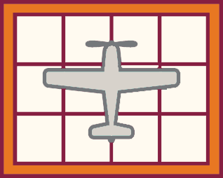

Goals
- Analyze the rhetorical situation and determine the appropriate audience or users of written communication, considering the needs of global audiences and people with disabilities. [CLO 1]
- Conduct research appropriate to workplace problem solving, such as literature review, evaluation of online resources, interview, and site inspection. [CLO 2]
- Interpret research findings with understanding of ethical and human implications. [CLO 3]
- Use conventions of various workplace genres, such as proposals, instructions, correspondence, reports, and slide decks, with understanding of how the genre conventions can be used as heuristics and as principles of arrangement. [CLO 4]
- Collaborate with classmates in planning, researching, writing, revising, and presenting information. [CLO 5]
- Apply principles of effective visual design for print and electronic presentation, including hierarchical, chronological, and spatial arrangements. [CLO 6]
- Identify and apply the principles of effective style in the composing of usable, reader-centered written communications. [CLO 7]
The Task
What I Want You to Do
Tell me about the topic and format you have chosen for your technical description, which will visualize an item or process related to your Recommendation Report. You will incorporate your description into your report later in the term.
Why I Want You to Do It
Description is a basic skill you will use frequently in the workplace. You will need to describe ideas to clients, managers, and the public. You might describe a new product or a new process. This week, I want you to tell me a few things about your topic so that I can make sure you have chosen something that works for the project.
How You Do It
- Review these examples to get an idea of the kinds of projects that work for this assignment:
- Decide on an item or process related to the situation you are exploring in your recommendation report, following these guidelines:
- Since we are using the water cycle as an example, do not use that topic.
- Choose a simple item or process that you already understand to avoid needing outside research.
- Be sure that you can explain the item or process in your own words.You do not need outside sources.
- Focus on an item or process you can explain in a couple of paragraphs. NASA’s The Water Cycle is a good example of the appropriate length.
- Choose a visual format for your technical description. Choose a format you are already familiar with so that you can focus on the content. For instance, if you have never made an interactive HTML5 webpage (like the interactive image in the USGS list above), this is not the time to learn how. For this project, you can create any of the following:
- an image with explanatory text beside it (as a word processor document or webpage)
- a video
- a comic or graphic novel
- a poster with included explanatory text
- an interactive webpage or image
- something else—you can propose another format by emailing me.
- Complete the quiz to tell me:
- What item or process will you focus on.
- What visual format will you use.
Obtaining the Points for Your Work
You track and grade your own work in this course. Be sure to complete the following tasks:
- Track your work in your Weekly Work Log.
- When you submit your work, the points will be recorded in Canvas Grades automatically. I will review your answers. If I find that you did not put in appropriate effort or did not do the expected work, I will adjust your grade accordingly.